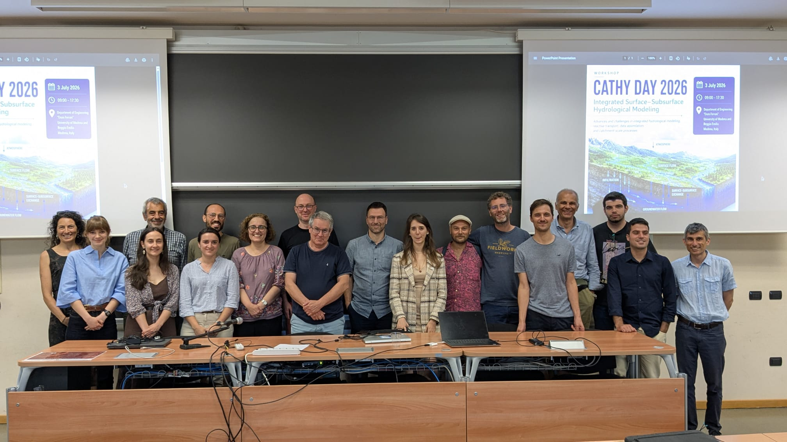
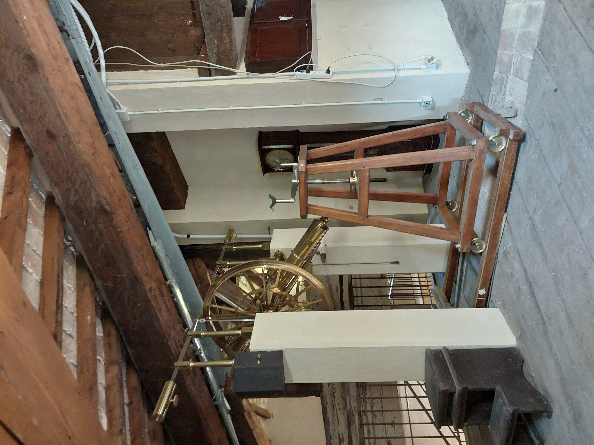

Roadmap to water accounting at catchment scale using hydrogeophysics and DA | Benjamin Mary (ICA-CSIC) at CATHY Days 2026
by Benjamin Mary | 2026/07/03
At CATHY Days 2026 in Modena (July 3rd, 2026), [Benjamin Mary](…/team#Benjamin Mary) (ICA-CSIC) presented a talk titled “Roadmap to water accounting at catchment scale using hydrogeophysics and DA”, focusing on integrated hydrological modeling, remote sensing, and geophysical data assimilation using pyCATHY[cite: 1]. During the event, participants also had the opportunity to visit the local observatory tower.

Presentation Overview
The presentation highlighted key advancements and workflows within pyCATHY, an open-source, FAIR wrapper for the CATHY hydrological model[cite: 1]:
-
CATHY & EO Modules: Integrating CATHY core (Fortran) with Earth Observation (EO) data such as pyTSEB for evapotranspiration modeling, netCDF raster handling, and post-fire catchment recovery applications (e.g., GRWATER project)[cite: 1].
-
Geophysics & DA Modules: Coupling hydrological simulations with geophysical tools (pyGIMLi, EMagPy) for 3D soil characterization, electrical resistivity tomography (ERT), and data assimilation (EnKF) using actual and synthetic observations (ERT, $ET_a$)[cite: 1].
-
Current Bottlenecks & Future Perspectives: Addressing challenges in observation covariance matrices and filter inbreeding, alongside future developments for agricultural water accounting (Centum algorithm, blue vs. green water footprint) and AI integration[cite: 1].

Visit to the observatory tower during CATHY Days 2026.
How to cite / Learn more: Mary, B., et al. pyCATHY wrapper repository: https://github.com/BenjMy/pycathy_wrapper[cite: 1].